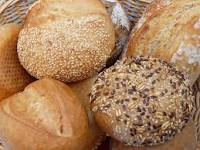

Bread

Delicious bread recipe!
Perfect homemade bread
Ingredients:
- 1 tablespoon olive oil
- 1 teaspoon sugar
- 1 package dry yeast (about 2 1/4 teaspoons)
- 1¼ cups warm water (100° to 110°), divided
- 3 cups all-purpose flour
- 1¼ teaspoons salt
- Cooking spray
- 1 large egg, lightly beaten
Steps:
- Dissolve sugar and yeast in 1/4 cup warm water in a large bowl; let stand 5 minutes.
- Lightly spoon flour into dry measuring cups, and level with a knife. Add 1 cup warm water, flour, and salt to yeast mixture; stir until a soft dough forms. Turn out onto a floured surface. Knead dough until smooth and elastic (about 5 minutes).
- Place dough in a large bowl coated with cooking spray, turning to coat top. Cover and let rise in a warm place (85°), free from drafts, 45 minutes or until doubled in size. (Gently press two fingers into dough. If indentation remains, dough has risen enough.
- Uncover dough, and punch dough down. Cover and let rise 30 minutes. Uncover dough; punch dough down. Cover and let rest 10 minutes. Roll into a 14 x 7-inch rectangle on a floured surface. Roll up tightly, starting with a short edge, pressing firmly to eliminate air pockets; pinch seam and ends to seal. Place roll, seam side down, in an 8 x 4-inch loaf pan coated with cooking spray. Cover and let rise 30 minutes or until doubled in size.
- Preheat oven to 425°.
- Uncover dough; gently brush with egg. Bake at 425° for 12 minutes. Reduce oven temperature to 350° (do not remove bread from oven); bake an additional 15 minutes or until loaf sounds hollow when tapped. Remove from pan; cool on a wire rack.
More recipes: